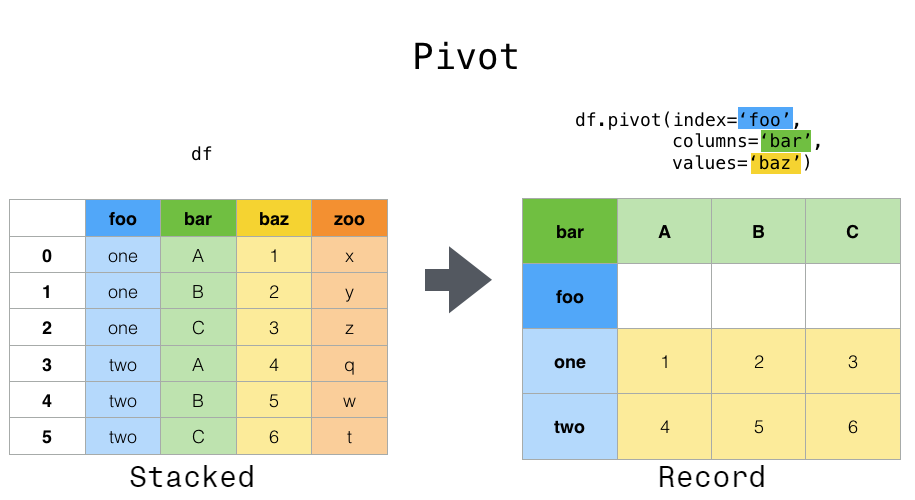
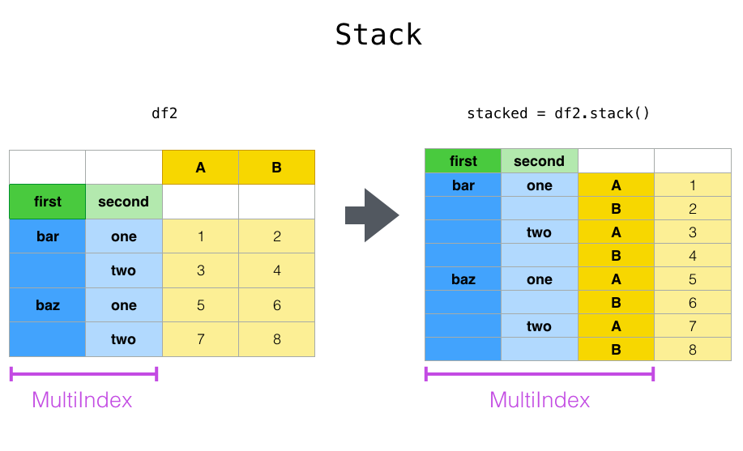
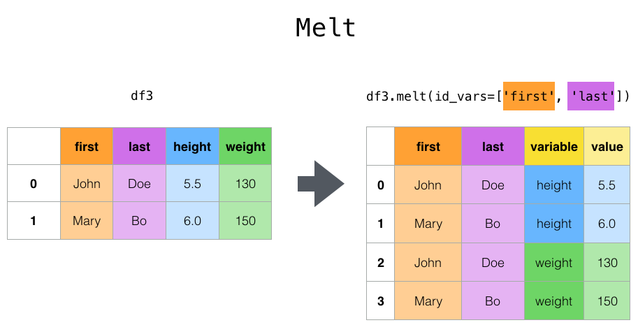

重塑和数据透视表#
pandas 提供了用于操作 Series 和 DataFrame 的方法，以改变数据表示形式，便于进一步的数据处理或数据汇总。
pivot()和pivot_table()：将一个或多个离散类别中的唯一值分组。melt()和wide_to_long()：将宽格式的DataFrame转换为长格式。get_dummies()和from_dummies()：带有指示变量的转换。explode()：将列中的列表状值转换为单独的行。crosstab()：计算多个一维因子数组的交叉表。cut()：将连续变量转换为离散的分类值factorize()：将一维变量编码为整数标签。
pivot() 和 pivot_table()#

pivot()#
数据通常以所谓的“堆叠（stacked）”或“记录（record）”格式存储。在“记录”或“宽（wide）”格式中，通常每个主体对应一行。在“堆叠”或“长（long）”格式中，每个主体可能有多行。
In [1]: data = {
...: "value": range(12),
...: "variable": ["A"] * 3 + ["B"] * 3 + ["C"] * 3 + ["D"] * 3,
...: "date": pd.to_datetime(["2020-01-03", "2020-01-04", "2020-01-05"] * 4)
...: }
...:
In [2]: df = pd.DataFrame(data)
为了对每个唯一变量执行时间序列操作，更好的表示形式是 columns 是唯一变量，并且日期的 index 标识了单个观测值。为了将数据重塑为这种形式，我们使用 DataFrame.pivot() 方法（也作为顶层函数 pivot()）。
In [3]: pivoted = df.pivot(index="date", columns="variable", values="value")
In [4]: pivoted
Out[4]:
variable A B C D
date
2020-01-03 0 3 6 9
2020-01-04 1 4 7 10
2020-01-05 2 5 8 11
如果省略 values 参数，并且输入 DataFrame 有多个值列未用作列或索引输入到 pivot()，则生成的“透视” DataFrame 将具有 分层列，其最顶层指示相应的值列。
In [5]: df["value2"] = df["value"] * 2
In [6]: pivoted = df.pivot(index="date", columns="variable")
In [7]: pivoted
Out[7]:
value value2
variable A B C D A B C D
date
2020-01-03 0 3 6 9 0 6 12 18
2020-01-04 1 4 7 10 2 8 14 20
2020-01-05 2 5 8 11 4 10 16 22
然后您可以从透视后的 DataFrame 中选择子集。
In [8]: pivoted["value2"]
Out[8]:
variable A B C D
date
2020-01-03 0 6 12 18
2020-01-04 2 8 14 20
2020-01-05 4 10 16 22
请注意，在数据类型均匀的情况下，这会返回底层数据的视图。
注意
pivot() 只能处理由 index 和 columns 指定的唯一行。如果您的数据包含重复项，请使用 pivot_table()。
pivot_table()#
尽管 pivot() 提供了对各种数据类型的通用透视功能，pandas 还提供了 pivot_table() 或 pivot_table() 用于带有数值数据聚合的透视。
函数 pivot_table() 可用于创建电子表格样式的透视表。有关一些高级策略，请参阅 指南。
In [9]: import datetime
In [10]: df = pd.DataFrame(
....: {
....: "A": ["one", "one", "two", "three"] * 6,
....: "B": ["A", "B", "C"] * 8,
....: "C": ["foo", "foo", "foo", "bar", "bar", "bar"] * 4,
....: "D": np.random.randn(24),
....: "E": np.random.randn(24),
....: "F": [datetime.datetime(2013, i, 1) for i in range(1, 13)]
....: + [datetime.datetime(2013, i, 15) for i in range(1, 13)],
....: }
....: )
....:
In [11]: df
Out[11]:
A B C D E F
0 one A foo 0.469112 0.404705 2013-01-01
1 one B foo -0.282863 0.577046 2013-02-01
2 two C foo -1.509059 -1.715002 2013-03-01
3 three A bar -1.135632 -1.039268 2013-04-01
4 one B bar 1.212112 -0.370647 2013-05-01
.. ... .. ... ... ... ...
19 three B foo -1.087401 -0.472035 2013-08-15
20 one C foo -0.673690 -0.013960 2013-09-15
21 one A bar 0.113648 -0.362543 2013-10-15
22 two B bar -1.478427 -0.006154 2013-11-15
23 three C bar 0.524988 -0.923061 2013-12-15
[24 rows x 6 columns]
In [12]: pd.pivot_table(df, values="D", index=["A", "B"], columns=["C"])
Out[12]:
C bar foo
A B
one A -0.995460 0.595334
B 0.393570 -0.494817
C 0.196903 -0.767769
three A -0.431886 NaN
B NaN -1.065818
C 0.798396 NaN
two A NaN 0.197720
B -0.986678 NaN
C NaN -1.274317
In [13]: pd.pivot_table(
....: df, values=["D", "E"],
....: index=["B"],
....: columns=["A", "C"],
....: aggfunc="sum",
....: )
....:
Out[13]:
D ... E
A one three ... three two
C bar foo bar ... foo bar foo
B ...
A -1.990921 1.190667 -0.863772 ... NaN NaN -1.067650
B 0.787140 -0.989634 NaN ... 0.372851 1.63741 NaN
C 0.393806 -1.535539 1.596791 ... NaN NaN -3.491906
[3 rows x 12 columns]
In [14]: pd.pivot_table(
....: df, values="E",
....: index=["B", "C"],
....: columns=["A"],
....: aggfunc=["sum", "mean"],
....: )
....:
Out[14]:
sum mean
A one three two one three two
B C
A bar -0.471593 -2.008182 NaN -0.235796 -1.004091 NaN
foo 0.761726 NaN -1.067650 0.380863 NaN -0.533825
B bar -1.665170 NaN 1.637410 -0.832585 NaN 0.818705
foo -0.097554 0.372851 NaN -0.048777 0.186425 NaN
C bar -0.744154 -2.392449 NaN -0.372077 -1.196224 NaN
foo 1.061810 NaN -3.491906 0.530905 NaN -1.745953
结果是一个 DataFrame，可能在索引或列上具有 MultiIndex。如果未给定 values 列名，则透视表将在列中包含所有数据，作为额外的层次结构级别。
In [15]: pd.pivot_table(df[["A", "B", "C", "D", "E"]], index=["A", "B"], columns=["C"])
Out[15]:
D E
C bar foo bar foo
A B
one A -0.995460 0.595334 -0.235796 0.380863
B 0.393570 -0.494817 -0.832585 -0.048777
C 0.196903 -0.767769 -0.372077 0.530905
three A -0.431886 NaN -1.004091 NaN
B NaN -1.065818 NaN 0.186425
C 0.798396 NaN -1.196224 NaN
two A NaN 0.197720 NaN -0.533825
B -0.986678 NaN 0.818705 NaN
C NaN -1.274317 NaN -1.745953
此外，您可以使用 Grouper 用于 index 和 columns 关键字。有关 Grouper 的详细信息，请参阅 使用 Grouper 规范进行分组。
In [16]: pd.pivot_table(df, values="D", index=pd.Grouper(freq="ME", key="F"), columns="C")
Out[16]:
C bar foo
F
2013-01-31 NaN 0.595334
2013-02-28 NaN -0.494817
2013-03-31 NaN -1.274317
2013-04-30 -0.431886 NaN
2013-05-31 0.393570 NaN
2013-06-30 0.196903 NaN
2013-07-31 NaN 0.197720
2013-08-31 NaN -1.065818
2013-09-30 NaN -0.767769
2013-10-31 -0.995460 NaN
2013-11-30 -0.986678 NaN
2013-12-31 0.798396 NaN
添加边距#
将 margins=True 传递给 pivot_table() 将在行和列中添加一个带有 All 标签的行和列，其中包含跨行和列类别的部分组聚合。
In [17]: table = df.pivot_table(
....: index=["A", "B"],
....: columns="C",
....: values=["D", "E"],
....: margins=True,
....: aggfunc="std"
....: )
....:
In [18]: table
Out[18]:
D E
C bar foo All bar foo All
A B
one A 1.568517 0.178504 1.293926 0.179247 0.033718 0.371275
B 1.157593 0.299748 0.860059 0.653280 0.885047 0.779837
C 0.523425 0.133049 0.638297 1.111310 0.770555 0.938819
three A 0.995247 NaN 0.995247 0.049748 NaN 0.049748
B NaN 0.030522 0.030522 NaN 0.931203 0.931203
C 0.386657 NaN 0.386657 0.386312 NaN 0.386312
two A NaN 0.111032 0.111032 NaN 1.146201 1.146201
B 0.695438 NaN 0.695438 1.166526 NaN 1.166526
C NaN 0.331975 0.331975 NaN 0.043771 0.043771
All 1.014073 0.713941 0.871016 0.881376 0.984017 0.923568
此外，您可以调用 DataFrame.stack() 以将透视后的 DataFrame 显示为具有多级索引。
In [19]: table.stack(future_stack=True)
Out[19]:
D E
A B C
one A bar 1.568517 0.179247
foo 0.178504 0.033718
All 1.293926 0.371275
B bar 1.157593 0.653280
foo 0.299748 0.885047
... ... ...
two C foo 0.331975 0.043771
All 0.331975 0.043771
All bar 1.014073 0.881376
foo 0.713941 0.984017
All 0.871016 0.923568
[30 rows x 2 columns]
stack() 和 unstack()#

与 pivot() 方法密切相关的是适用于 Series 和 DataFrame 的相关 stack() 和 unstack() 方法。这些方法旨在与 MultiIndex 对象协同工作（请参阅有关 分层索引 的部分）。
stack()：将（可能是分层的）列标签的某一层“旋转”为行标签，返回一个索引具有新的最内层行标签的DataFrame。unstack()：（是stack()的逆操作）将（可能是分层的）行索引的某一层“旋转”到列轴，生成一个重塑的DataFrame，其具有新的最内层列标签。
In [20]: tuples = [
....: ["bar", "bar", "baz", "baz", "foo", "foo", "qux", "qux"],
....: ["one", "two", "one", "two", "one", "two", "one", "two"],
....: ]
....:
In [21]: index = pd.MultiIndex.from_arrays(tuples, names=["first", "second"])
In [22]: df = pd.DataFrame(np.random.randn(8, 2), index=index, columns=["A", "B"])
In [23]: df2 = df[:4]
In [24]: df2
Out[24]:
A B
first second
bar one 0.895717 0.805244
two -1.206412 2.565646
baz one 1.431256 1.340309
two -1.170299 -0.226169
函数 stack() “压缩”了 DataFrame 列中的一个级别，以生成以下之一：
一个
DataFrame，当列中存在MultiIndex时。
如果列具有 MultiIndex，您可以选择要堆叠的级别。堆叠后的级别将成为列中 MultiIndex 的新的最低级别。
In [25]: stacked = df2.stack(future_stack=True)
In [26]: stacked
Out[26]:
first second
bar one A 0.895717
B 0.805244
two A -1.206412
B 2.565646
baz one A 1.431256
B 1.340309
two A -1.170299
B -0.226169
dtype: float64
对于一个“堆叠”的 DataFrame 或 Series（其 MultiIndex 作为 index）， stack() 的逆操作是 unstack()，它默认解除堆叠 最后一个级别。
In [27]: stacked.unstack()
Out[27]:
A B
first second
bar one 0.895717 0.805244
two -1.206412 2.565646
baz one 1.431256 1.340309
two -1.170299 -0.226169
In [28]: stacked.unstack(1)
Out[28]:
second one two
first
bar A 0.895717 -1.206412
B 0.805244 2.565646
baz A 1.431256 -1.170299
B 1.340309 -0.226169
In [29]: stacked.unstack(0)
Out[29]:
first bar baz
second
one A 0.895717 1.431256
B 0.805244 1.340309
two A -1.206412 -1.170299
B 2.565646 -0.226169
如果索引有名称，您可以使用级别名称而不是指定级别编号。
In [30]: stacked.unstack("second")
Out[30]:
second one two
first
bar A 0.895717 -1.206412
B 0.805244 2.565646
baz A 1.431256 -1.170299
B 1.340309 -0.226169
请注意， stack() 和 unstack() 方法会隐式地对涉及的索引级别进行排序。因此，调用 stack() 然后 unstack()，反之亦然，将导致原始 DataFrame 或 Series 的 已排序 副本。
In [31]: index = pd.MultiIndex.from_product([[2, 1], ["a", "b"]])
In [32]: df = pd.DataFrame(np.random.randn(4), index=index, columns=["A"])
In [33]: df
Out[33]:
A
2 a -1.413681
b 1.607920
1 a 1.024180
b 0.569605
In [34]: all(df.unstack().stack(future_stack=True) == df.sort_index())
Out[34]: True
多个级别#
您还可以通过传递一个级别列表来一次堆叠或解除堆叠多个级别，在这种情况下，最终结果就像列表中每个级别都单独处理了一样。
In [35]: columns = pd.MultiIndex.from_tuples(
....: [
....: ("A", "cat", "long"),
....: ("B", "cat", "long"),
....: ("A", "dog", "short"),
....: ("B", "dog", "short"),
....: ],
....: names=["exp", "animal", "hair_length"],
....: )
....:
In [36]: df = pd.DataFrame(np.random.randn(4, 4), columns=columns)
In [37]: df
Out[37]:
exp A B A B
animal cat cat dog dog
hair_length long long short short
0 0.875906 -2.211372 0.974466 -2.006747
1 -0.410001 -0.078638 0.545952 -1.219217
2 -1.226825 0.769804 -1.281247 -0.727707
3 -0.121306 -0.097883 0.695775 0.341734
In [38]: df.stack(level=["animal", "hair_length"], future_stack=True)
Out[38]:
exp A B
animal hair_length
0 cat long 0.875906 -2.211372
dog short 0.974466 -2.006747
1 cat long -0.410001 -0.078638
dog short 0.545952 -1.219217
2 cat long -1.226825 0.769804
dog short -1.281247 -0.727707
3 cat long -0.121306 -0.097883
dog short 0.695775 0.341734
级别列表可以包含级别名称或级别编号，但不能混合使用两者。
# df.stack(level=['animal', 'hair_length'], future_stack=True)
# from above is equivalent to:
In [39]: df.stack(level=[1, 2], future_stack=True)
Out[39]:
exp A B
animal hair_length
0 cat long 0.875906 -2.211372
dog short 0.974466 -2.006747
1 cat long -0.410001 -0.078638
dog short 0.545952 -1.219217
2 cat long -1.226825 0.769804
dog short -1.281247 -0.727707
3 cat long -0.121306 -0.097883
dog short 0.695775 0.341734
缺失数据#
如果子组没有相同的标签集，解除堆叠可能会导致缺失值。默认情况下，缺失值将替换为该数据类型的默认填充值。
In [40]: columns = pd.MultiIndex.from_tuples(
....: [
....: ("A", "cat"),
....: ("B", "dog"),
....: ("B", "cat"),
....: ("A", "dog"),
....: ],
....: names=["exp", "animal"],
....: )
....:
In [41]: index = pd.MultiIndex.from_product(
....: [("bar", "baz", "foo", "qux"), ("one", "two")], names=["first", "second"]
....: )
....:
In [42]: df = pd.DataFrame(np.random.randn(8, 4), index=index, columns=columns)
In [43]: df3 = df.iloc[[0, 1, 4, 7], [1, 2]]
In [44]: df3
Out[44]:
exp B
animal dog cat
first second
bar one -1.110336 -0.619976
two 0.687738 0.176444
foo one 1.314232 0.690579
qux two 0.380396 0.084844
In [45]: df3.unstack()
Out[45]:
exp B
animal dog cat
second one two one two
first
bar -1.110336 0.687738 -0.619976 0.176444
foo 1.314232 NaN 0.690579 NaN
qux NaN 0.380396 NaN 0.084844
缺失值可以通过 fill_value 参数填充为特定值。
In [46]: df3.unstack(fill_value=-1e9)
Out[46]:
exp B
animal dog cat
second one two one two
first
bar -1.110336e+00 6.877384e-01 -6.199759e-01 1.764443e-01
foo 1.314232e+00 -1.000000e+09 6.905793e-01 -1.000000e+09
qux -1.000000e+09 3.803956e-01 -1.000000e+09 8.484421e-02
melt() 和 wide_to_long()#

顶层 melt() 函数和相应的 DataFrame.melt() 有助于将 DataFrame 整理成一种格式，其中一个或多个列是标识符变量，而所有其他被视为测量变量的列则“解除透视”到行轴，只剩下两个非标识符列：“variable”和“value”。这些列的名称可以通过提供 var_name 和 value_name 参数进行自定义。
In [47]: cheese = pd.DataFrame(
....: {
....: "first": ["John", "Mary"],
....: "last": ["Doe", "Bo"],
....: "height": [5.5, 6.0],
....: "weight": [130, 150],
....: }
....: )
....:
In [48]: cheese
Out[48]:
first last height weight
0 John Doe 5.5 130
1 Mary Bo 6.0 150
In [49]: cheese.melt(id_vars=["first", "last"])
Out[49]:
first last variable value
0 John Doe height 5.5
1 Mary Bo height 6.0
2 John Doe weight 130.0
3 Mary Bo weight 150.0
In [50]: cheese.melt(id_vars=["first", "last"], var_name="quantity")
Out[50]:
first last quantity value
0 John Doe height 5.5
1 Mary Bo height 6.0
2 John Doe weight 130.0
3 Mary Bo weight 150.0
当使用 melt() 转换 DataFrame 时，索引将被忽略。通过将 ignore_index=False 参数设置为 False（默认是 True），可以保留原始索引值。然而，ignore_index=False 会导致索引值重复。
In [51]: index = pd.MultiIndex.from_tuples([("person", "A"), ("person", "B")])
In [52]: cheese = pd.DataFrame(
....: {
....: "first": ["John", "Mary"],
....: "last": ["Doe", "Bo"],
....: "height": [5.5, 6.0],
....: "weight": [130, 150],
....: },
....: index=index,
....: )
....:
In [53]: cheese
Out[53]:
first last height weight
person A John Doe 5.5 130
B Mary Bo 6.0 150
In [54]: cheese.melt(id_vars=["first", "last"])
Out[54]:
first last variable value
0 John Doe height 5.5
1 Mary Bo height 6.0
2 John Doe weight 130.0
3 Mary Bo weight 150.0
In [55]: cheese.melt(id_vars=["first", "last"], ignore_index=False)
Out[55]:
first last variable value
person A John Doe height 5.5
B Mary Bo height 6.0
A John Doe weight 130.0
B Mary Bo weight 150.0
wide_to_long() 与 melt() 类似，但提供了更多的列匹配自定义功能。
In [56]: dft = pd.DataFrame(
....: {
....: "A1970": {0: "a", 1: "b", 2: "c"},
....: "A1980": {0: "d", 1: "e", 2: "f"},
....: "B1970": {0: 2.5, 1: 1.2, 2: 0.7},
....: "B1980": {0: 3.2, 1: 1.3, 2: 0.1},
....: "X": dict(zip(range(3), np.random.randn(3))),
....: }
....: )
....:
In [57]: dft["id"] = dft.index
In [58]: dft
Out[58]:
A1970 A1980 B1970 B1980 X id
0 a d 2.5 3.2 1.519970 0
1 b e 1.2 1.3 -0.493662 1
2 c f 0.7 0.1 0.600178 2
In [59]: pd.wide_to_long(dft, ["A", "B"], i="id", j="year")
Out[59]:
X A B
id year
0 1970 1.519970 a 2.5
1 1970 -0.493662 b 1.2
2 1970 0.600178 c 0.7
0 1980 1.519970 d 3.2
1 1980 -0.493662 e 1.3
2 1980 0.600178 f 0.1
get_dummies() 和 from_dummies()#
为了将 Series 的分类变量转换为“虚拟（dummy）”或“指示符（indicator）”变量， get_dummies() 会创建一个新的 DataFrame，其列是唯一变量，值表示每行中这些变量的存在。
In [60]: df = pd.DataFrame({"key": list("bbacab"), "data1": range(6)})
In [61]: pd.get_dummies(df["key"])
Out[61]:
a b c
0 False True False
1 False True False
2 True False False
3 False False True
4 True False False
5 False True False
In [62]: df["key"].str.get_dummies()
Out[62]:
a b c
0 0 1 0
1 0 1 0
2 1 0 0
3 0 0 1
4 1 0 0
5 0 1 0
prefix 为列名添加一个前缀，这对于将结果与原始 DataFrame 合并很有用。
In [63]: dummies = pd.get_dummies(df["key"], prefix="key")
In [64]: dummies
Out[64]:
key_a key_b key_c
0 False True False
1 False True False
2 True False False
3 False False True
4 True False False
5 False True False
In [65]: df[["data1"]].join(dummies)
Out[65]:
data1 key_a key_b key_c
0 0 False True False
1 1 False True False
2 2 True False False
3 3 False False True
4 4 True False False
5 5 False True False
此函数通常与诸如 cut() 之类的离散化函数一起使用。
In [66]: values = np.random.randn(10)
In [67]: values
Out[67]:
array([ 0.2742, 0.1329, -0.0237, 2.4102, 1.4505, 0.2061, -0.2519,
-2.2136, 1.0633, 1.2661])
In [68]: bins = [0, 0.2, 0.4, 0.6, 0.8, 1]
In [69]: pd.get_dummies(pd.cut(values, bins))
Out[69]:
(0.0, 0.2] (0.2, 0.4] (0.4, 0.6] (0.6, 0.8] (0.8, 1.0]
0 False True False False False
1 True False False False False
2 False False False False False
3 False False False False False
4 False False False False False
5 False True False False False
6 False False False False False
7 False False False False False
8 False False False False False
9 False False False False False
get_dummies() 也接受一个 DataFrame。默认情况下，object、string 或 categorical 类型的列被编码为虚拟变量，其他列保持不变。
In [70]: df = pd.DataFrame({"A": ["a", "b", "a"], "B": ["c", "c", "b"], "C": [1, 2, 3]})
In [71]: pd.get_dummies(df)
Out[71]:
C A_a A_b B_b B_c
0 1 True False False True
1 2 False True False True
2 3 True False True False
指定 columns 关键字将编码任何类型的列。
In [72]: pd.get_dummies(df, columns=["A"])
Out[72]:
B C A_a A_b
0 c 1 True False
1 c 2 False True
2 b 3 True False
与 Series 版本一样，您可以为 prefix 和 prefix_sep 传递值。默认情况下，列名用作前缀，_ 用作前缀分隔符。您可以通过3种方式指定 prefix 和 prefix_sep：
字符串：对要编码的每列使用相同的值作为
prefix或prefix_sep。列表：必须与要编码的列数长度相同。
字典：将列名映射到前缀。
In [73]: simple = pd.get_dummies(df, prefix="new_prefix")
In [74]: simple
Out[74]:
C new_prefix_a new_prefix_b new_prefix_b new_prefix_c
0 1 True False False True
1 2 False True False True
2 3 True False True False
In [75]: from_list = pd.get_dummies(df, prefix=["from_A", "from_B"])
In [76]: from_list
Out[76]:
C from_A_a from_A_b from_B_b from_B_c
0 1 True False False True
1 2 False True False True
2 3 True False True False
In [77]: from_dict = pd.get_dummies(df, prefix={"B": "from_B", "A": "from_A"})
In [78]: from_dict
Out[78]:
C from_A_a from_A_b from_B_b from_B_c
0 1 True False False True
1 2 False True False True
2 3 True False True False
为了避免将结果输入统计模型时出现共线性，请指定 drop_first=True。
In [79]: s = pd.Series(list("abcaa"))
In [80]: pd.get_dummies(s)
Out[80]:
a b c
0 True False False
1 False True False
2 False False True
3 True False False
4 True False False
In [81]: pd.get_dummies(s, drop_first=True)
Out[81]:
b c
0 False False
1 True False
2 False True
3 False False
4 False False
当列只包含一个级别时，它将在结果中被省略。
In [82]: df = pd.DataFrame({"A": list("aaaaa"), "B": list("ababc")})
In [83]: pd.get_dummies(df)
Out[83]:
A_a B_a B_b B_c
0 True True False False
1 True False True False
2 True True False False
3 True False True False
4 True False False True
In [84]: pd.get_dummies(df, drop_first=True)
Out[84]:
B_b B_c
0 False False
1 True False
2 False False
3 True False
4 False True
值可以使用 dtype 参数转换为不同的类型。
In [85]: df = pd.DataFrame({"A": list("abc"), "B": [1.1, 2.2, 3.3]})
In [86]: pd.get_dummies(df, dtype=np.float32).dtypes
Out[86]:
B float64
A_a float32
A_b float32
A_c float32
dtype: object
在 1.5.0 版中新增。
from_dummies() 将 get_dummies() 的输出从指示符值转换回分类值的 Series。
In [87]: df = pd.DataFrame({"prefix_a": [0, 1, 0], "prefix_b": [1, 0, 1]})
In [88]: df
Out[88]:
prefix_a prefix_b
0 0 1
1 1 0
2 0 1
In [89]: pd.from_dummies(df, sep="_")
Out[89]:
prefix
0 b
1 a
2 b
虚拟编码的数据只需要包含 k - 1 个类别，在这种情况下，最后一个类别是默认类别。默认类别可以通过 default_category 进行修改。
In [90]: df = pd.DataFrame({"prefix_a": [0, 1, 0]})
In [91]: df
Out[91]:
prefix_a
0 0
1 1
2 0
In [92]: pd.from_dummies(df, sep="_", default_category="b")
Out[92]:
prefix
0 b
1 a
2 b
explode()#
对于一个 DataFrame 具有嵌套、列表状值的列， explode() 会将每个列表状值转换为单独的行。结果 Index 将根据原始行的索引标签进行复制。
In [93]: keys = ["panda1", "panda2", "panda3"]
In [94]: values = [["eats", "shoots"], ["shoots", "leaves"], ["eats", "leaves"]]
In [95]: df = pd.DataFrame({"keys": keys, "values": values})
In [96]: df
Out[96]:
keys values
0 panda1 [eats, shoots]
1 panda2 [shoots, leaves]
2 panda3 [eats, leaves]
In [97]: df["values"].explode()
Out[97]:
0 eats
0 shoots
1 shoots
1 leaves
2 eats
2 leaves
Name: values, dtype: object
DataFrame.explode 也可以在 DataFrame 中展开列。
In [98]: df.explode("values")
Out[98]:
keys values
0 panda1 eats
0 panda1 shoots
1 panda2 shoots
1 panda2 leaves
2 panda3 eats
2 panda3 leaves
Series.explode() 会将空列表替换为缺失值指示符，并保留标量条目。
In [99]: s = pd.Series([[1, 2, 3], "foo", [], ["a", "b"]])
In [100]: s
Out[100]:
0 [1, 2, 3]
1 foo
2 []
3 [a, b]
dtype: object
In [101]: s.explode()
Out[101]:
0 1
0 2
0 3
1 foo
2 NaN
3 a
3 b
dtype: object
逗号分隔的字符串值可以拆分为列表中的单个值，然后展开为新行。
In [102]: df = pd.DataFrame([{"var1": "a,b,c", "var2": 1}, {"var1": "d,e,f", "var2": 2}])
In [103]: df.assign(var1=df.var1.str.split(",")).explode("var1")
Out[103]:
var1 var2
0 a 1
0 b 1
0 c 1
1 d 2
1 e 2
1 f 2
crosstab()#
使用 crosstab() 来计算两个（或更多）因子的交叉表。默认情况下， crosstab() 会计算因子的频率表，除非传入一个值数组和聚合函数。
任何传入的 Series 都将使用其名称属性，除非为交叉表指定了行或列名称。
In [104]: a = np.array(["foo", "foo", "bar", "bar", "foo", "foo"], dtype=object)
In [105]: b = np.array(["one", "one", "two", "one", "two", "one"], dtype=object)
In [106]: c = np.array(["dull", "dull", "shiny", "dull", "dull", "shiny"], dtype=object)
In [107]: pd.crosstab(a, [b, c], rownames=["a"], colnames=["b", "c"])
Out[107]:
b one two
c dull shiny dull shiny
a
bar 1 0 0 1
foo 2 1 1 0
如果 crosstab() 只接收两个 Series，它将提供一个频率表。
In [108]: df = pd.DataFrame(
.....: {"A": [1, 2, 2, 2, 2], "B": [3, 3, 4, 4, 4], "C": [1, 1, np.nan, 1, 1]}
.....: )
.....:
In [109]: df
Out[109]:
A B C
0 1 3 1.0
1 2 3 1.0
2 2 4 NaN
3 2 4 1.0
4 2 4 1.0
In [110]: pd.crosstab(df["A"], df["B"])
Out[110]:
B 3 4
A
1 1 0
2 1 3
crosstab() 还可以汇总为 Categorical 数据。
In [111]: foo = pd.Categorical(["a", "b"], categories=["a", "b", "c"])
In [112]: bar = pd.Categorical(["d", "e"], categories=["d", "e", "f"])
In [113]: pd.crosstab(foo, bar)
Out[113]:
col_0 d e
row_0
a 1 0
b 0 1
对于 Categorical 数据，即使实际数据不包含特定类别的任何实例，若要包含 所有 数据类别，请使用 dropna=False。
In [114]: pd.crosstab(foo, bar, dropna=False)
Out[114]:
col_0 d e f
row_0
a 1 0 0
b 0 1 0
c 0 0 0
归一化#
频率表也可以使用 normalize 参数进行归一化，以显示百分比而非计数。
In [115]: pd.crosstab(df["A"], df["B"], normalize=True)
Out[115]:
B 3 4
A
1 0.2 0.0
2 0.2 0.6
normalize 还可以对每行或每列中的值进行归一化。
In [116]: pd.crosstab(df["A"], df["B"], normalize="columns")
Out[116]:
B 3 4
A
1 0.5 0.0
2 0.5 1.0
crosstab() 还可以接受第三个 Series 和一个聚合函数（aggfunc），该函数将应用于由前两个 Series 定义的每个组中第三个 Series 的值。
In [117]: pd.crosstab(df["A"], df["B"], values=df["C"], aggfunc="sum")
Out[117]:
B 3 4
A
1 1.0 NaN
2 1.0 2.0
添加边距#
margins=True 将在行和列中添加一个带有 All 标签的行和列，其中包含跨行和列类别的部分组聚合。
In [118]: pd.crosstab(
.....: df["A"], df["B"], values=df["C"], aggfunc="sum", normalize=True, margins=True
.....: )
.....:
Out[118]:
B 3 4 All
A
1 0.25 0.0 0.25
2 0.25 0.5 0.75
All 0.50 0.5 1.00
cut()#
函数 cut() 计算输入数组值的分组，并常用于将连续变量转换为离散或分类变量。
一个整数 bins 将形成等宽的箱。
In [119]: ages = np.array([10, 15, 13, 12, 23, 25, 28, 59, 60])
In [120]: pd.cut(ages, bins=3)
Out[120]:
[(9.95, 26.667], (9.95, 26.667], (9.95, 26.667], (9.95, 26.667], (9.95, 26.667], (9.95, 26.667], (26.667, 43.333], (43.333, 60.0], (43.333, 60.0]]
Categories (3, interval[float64, right]): [(9.95, 26.667] < (26.667, 43.333] < (43.333, 60.0]]
有序的箱边列表将为每个变量分配一个区间。
In [121]: pd.cut(ages, bins=[0, 18, 35, 70])
Out[121]:
[(0, 18], (0, 18], (0, 18], (0, 18], (18, 35], (18, 35], (18, 35], (35, 70], (35, 70]]
Categories (3, interval[int64, right]): [(0, 18] < (18, 35] < (35, 70]]
如果 bins 关键字是一个 IntervalIndex，那么这些将被用来对传入的数据进行分箱。
In [122]: pd.cut(ages, bins=pd.IntervalIndex.from_breaks([0, 40, 70]))
Out[122]:
[(0, 40], (0, 40], (0, 40], (0, 40], (0, 40], (0, 40], (0, 40], (40, 70], (40, 70]]
Categories (2, interval[int64, right]): [(0, 40] < (40, 70]]
factorize()#
factorize() 将一维值编码为整数标签。缺失值被编码为 -1。
In [123]: x = pd.Series(["A", "A", np.nan, "B", 3.14, np.inf])
In [124]: x
Out[124]:
0 A
1 A
2 NaN
3 B
4 3.14
5 inf
dtype: object
In [125]: labels, uniques = pd.factorize(x)
In [126]: labels
Out[126]: array([ 0, 0, -1, 1, 2, 3])
In [127]: uniques
Out[127]: Index(['A', 'B', 3.14, inf], dtype='object')
Categorical 也将类似地编码一维值，以进行进一步的分类操作。
In [128]: pd.Categorical(x)
Out[128]:
['A', 'A', NaN, 'B', 3.14, inf]
Categories (4, object): [3.14, inf, 'A', 'B']